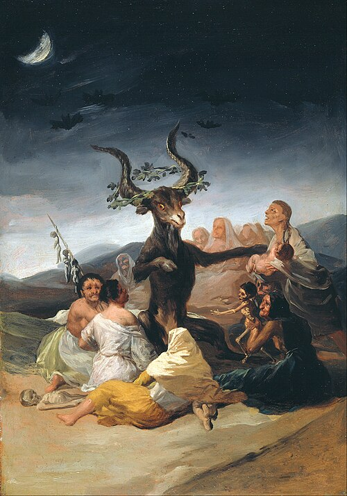
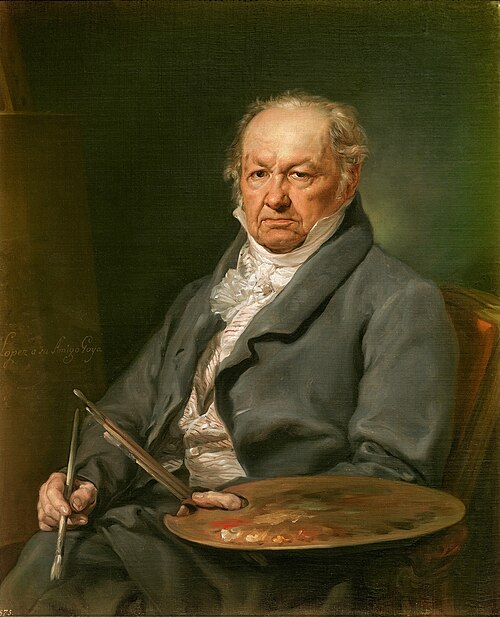
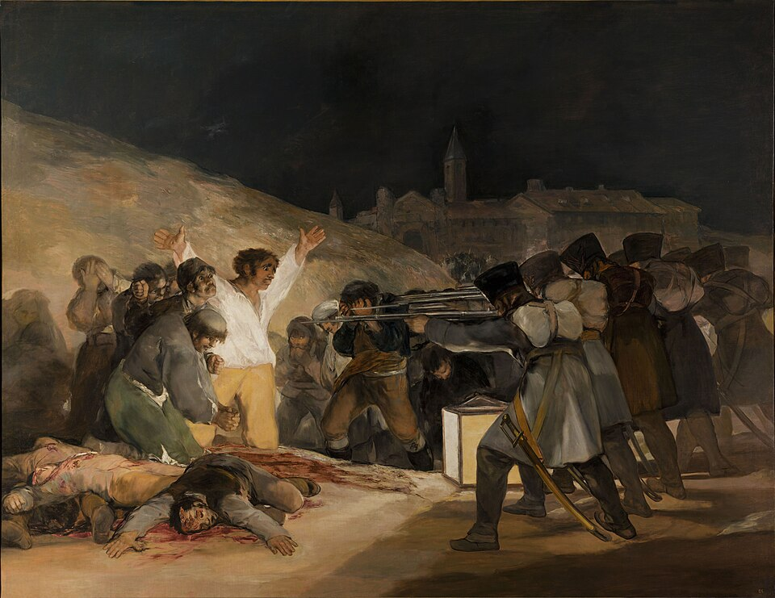
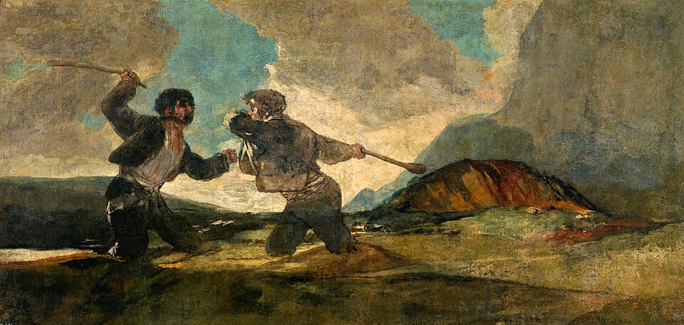

Introduction
Francisco José de Goya y Lucientes was a Spanish romantic painter and printmaker. He is considered the most important Spanish artist of the late eighteenth and early nineteenth centuries.
His paintings, drawings and engravings reflected contemporary historical events and influenced major nineteenth- and twentieth-century painters. His work includes portraits, scenes of everyday life, religious paintings and powerful images of war.

Biography
Goya lived through a period of profound political and social change. His long career took him from provincial workshops to the Spanish royal court and, finally, to exile in France.

Early years (1746–1771)
Goya was born in Fuendetodos, Aragon, in 1746 and grew up in Zaragoza. He began his artistic training with José Luzán before moving to Madrid, where he tried to enter competitions at the Royal Academy of Fine Art.
Visit to Italy
As a young artist, Goya travelled to Italy to study the great masters. His time there broadened his training, and a painting he submitted to a competition in Parma received recognition from the judges.
Madrid (1775–1789)
Goya settled in Madrid and designed tapestry cartoons for the Royal Tapestry Factory. These colourful scenes of leisure and popular life helped establish his reputation and brought him closer to the royal court.
Court painter
In 1789, Goya became court painter to Charles IV. He produced portraits of the royal family and the Spanish aristocracy, combining formal elegance with remarkably direct observations of his sitters.
Middle period (1793–1799)
A serious illness left Goya deaf. His art became more personal and critical, as seen in the print series Los Caprichos, which examined superstition, ignorance and social injustice.
Peninsular War (1808–1814)
The violence of the war between Spain and Napoleonic France inspired some of Goya’s most disturbing works. The Disasters of War and his paintings of the events of May 1808 reject heroic celebration and focus on human suffering.
Bordeaux (October 1824–1828)
Goya moved to Bordeaux during the final years of his life. He continued drawing, painting and experimenting with lithography until his death there in 1828, at the age of eighty-two.
Best works
Goya worked in many genres, from court portraiture to prints and scenes of conflict. The Third of May 1808 is among his most famous paintings and presents the terror of an execution rather than a conventional military victory.

My three favourite paintings
- The Third of May 1808
- The Dog
- Witches’ Sabbath
Black Paintings
The Black Paintings are fourteen works that Goya painted directly onto the walls of the Quinta del Sordo, his house outside Madrid. Created late in his life, they use dark colours and unsettling subjects.
The paintings were not commissioned and were not intended for public display. Decades after Goya’s death, they were transferred from the walls to canvas and eventually entered the collection of the Museo del Prado.

- Atropos
- Two Old Men
- Two Old Men Eating Soup
- Fight with Cudgels
- Witches’ Sabbath
- Men Reading
- Judith and Holofernes
- A Pilgrimage to San Isidro
- Women Laughing
- Procession of the Holy Office
- The Dog
- Saturn Devouring His Son
- La Leocadia
- Fantastic Vision